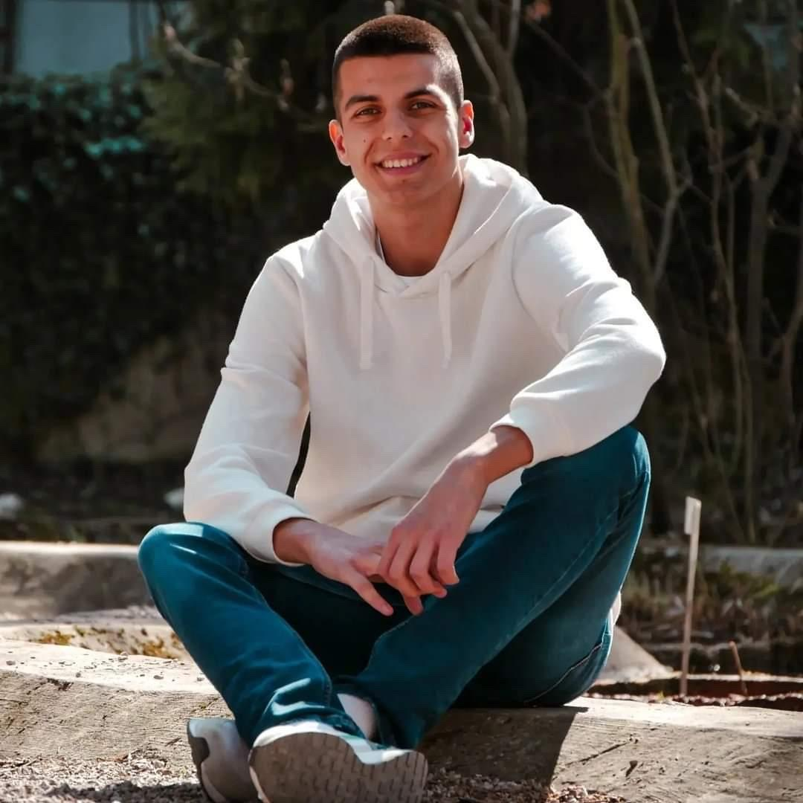
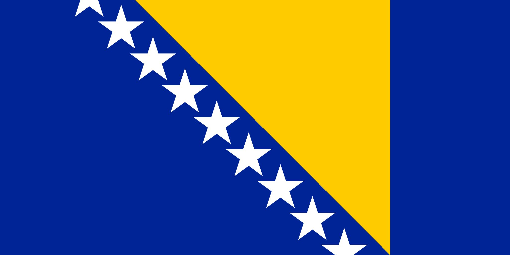

Huseinagić Faris

Age: 19
City/Country: Donji Vakuf, Bosnia and Herzegovina

Motivation: "The inspiring thing that made me go on a journey of becoming the changemaker happened suddenly. I got a call to be a part of one changemaking program, and I loved it. The way you communicate with other people and everything we did. After that, I searched for more of these projects."
Projects: Faris has worked in four projects, with three of them focused on peacebuilding with neighboring countries. He is especially proud of the project in Romania, where he helped represent Bosnian culture to international audiences.
Values: The most important value for Faris is empathy. It allows for understanding people's experiences and emotions, which is the foundation for any positive change and building meaningful solutions for others.
Goals: Faris hopes to continue showing the world that Bosnia is a beautiful country with diverse cultures and people, while also contributing to positive changes through his work.
Advice: "Don't be scared! Your opinion truly matters. If you don't speak up, who will?"
Interests: Besides his work, Faris enjoys engaging with different cultures and learning new things, contributing to peace and harmony in his community.
Contact: